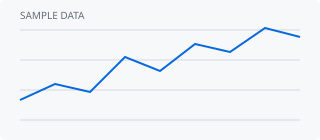

山间有风28 分钟前 · 来自网页版长期观察 重新理解长期主义：比预测更重要的事 最近重新整理了过去三年的观察笔记。比起每天寻找新的机会，我越来越觉得，建立一套可以持续执行的研究框架，才是最值得投入时间的事情。把注意力放在能够理解的变化上，给判断留一点余地。  ♡ 42评论 18查看讨论 ↗
慢慢研究员46 分钟前研究笔记 读财报时，我会先看这几个问题 收入从哪里来，现金流往哪里去，增长需要付出多少成本。用几个简单的问题开始，比一开始就钻进复杂的估值模型更有帮助。今天整理了一份阅读清单，欢迎补充。 ♡ 86评论 32查看讨论 ↗
北纬三十度2 小时前每周复盘 本周阅读清单与一些开放问题 这周主要在看消费行业的变化。需求的恢复往往不是一条直线，值得多关注经营细节，以及不同企业应对变化的方式。 观察记录：保持耐心，把问题拆小，持续跟踪。 ♡ 61评论 24查看讨论 ↗